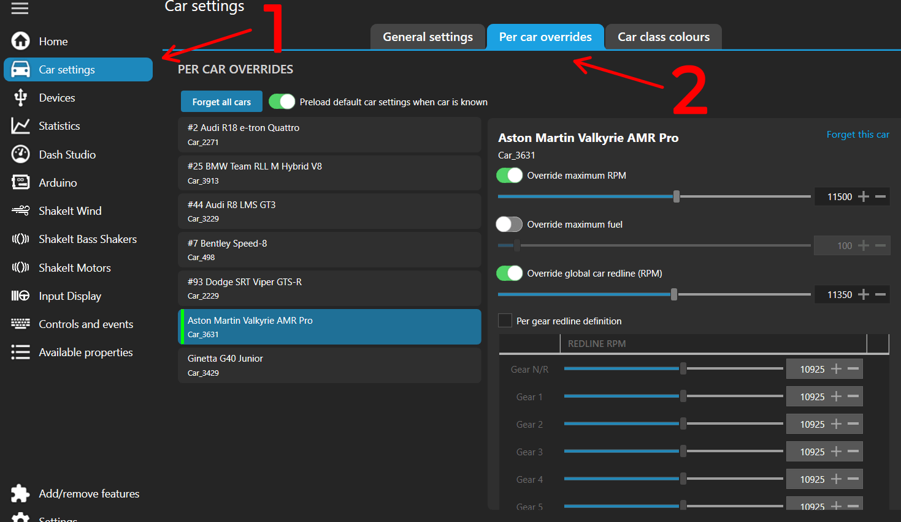
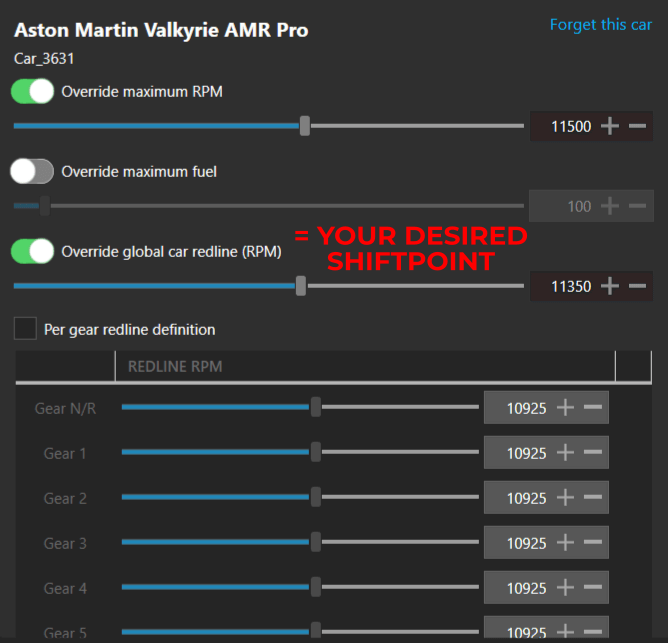

So you made your way into the Tutorials. Smart choice lmao.

Tachometer "How to". This will result in absolute precision but requires manual setup
for each car when it is first driven
Step 1:
- Open SimHub.
- Open the Game.
- Select the car you wish to configure.
- Start any session of your liking. Can be free practice, Multiplayer, Rivals or anything
else.
Step 2:
- Head back to SimHub.
- Go to "Car Settings" & "Per Car Overrides". Select the car you are driving (indicated by
a green bar)

Step 3:
- Important bit #1 to set it up correctly.
- The first one in the list "Override Maximum RPM" will function as the car Rev Limit.

- So go back in-game, open the Telemetry (Down on the D-Pad).
- Now Rev Bang the car and make sure to remember the Rev Limit of the car.
Preferred method: Do it while sitting still with the
clutch engaged.
- Head back to SimHub and write that number in the "Override Maximum RPM" value.
- Your Tachometer will now self adjust to match that number.
Step 4:
- Important bit #2 to set it up correctly.
- The third one in the list "Override Global Car Redline" will function as your optimal
Shiftpoint indicator.

- So go back in-game, open the Telemetry (Down on the D-Pad).
- Now you need to drive the car and have an understanding of the engine Power/Torque output & at which RPM you need to set the Upshift point so that the Next Gear is correctly in power band.
- You'll then need to input a value in "Override Global Car Redline" that will indicate the
Optimal Upshift Point to you and for that Car.
Optimal Upshift Point to you and for that Car.
Preferred method: Do it on the flattest and straightest
track surfaces (Ovals, Long & Flat Straights).
- Your Tachometer indicators (ShiftLights, Color changes etc) will now self adjust to that
value.
Step 5:
- Repeat process for each new car you wish to correctly setup.
Setup Process Example:
Great Success???
- Great Success.